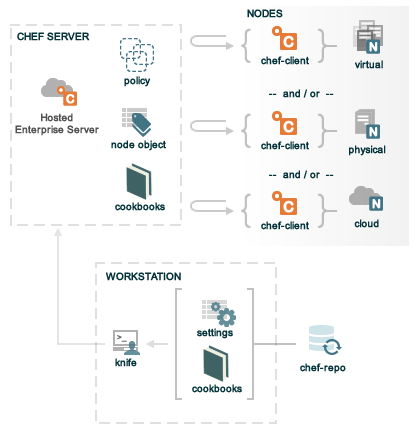

Chef
Gestione dell'infrastruttura
Chi Siamo
Daniele Palombo
Daniele Palombo -> tw: @ksemuldie, gh: DanielePalombo
E-Business
Appassionato di sviluppo Agile e tecniche di programmazione
Alessio Rocco
AlessioRocco = { tw: @alessio_rocco, gh: AlessioRocco }
Backend Developer appassionato di sviluppo Agile e Test
Matteo Latini
Matteo Latini -> tw: @matteolatini, gh: mtylty
Un backend developer + sistemista per NebuLab
Un giorno vorrei fare il sysop...
Sono appassionato di strategie e procedure di deploy
Installazione, configurazione, update & bugfix
I Problemi
- Configurare un sistema è un'operazione lenta e monotona
- Quando i sistemi sono molti, l'errore umano è praticamente certo
- Effettuare enforcement di procedure stabile è molto difficili (e.g. Junior Sysadmin)
- Senza un meccanismo di reportistica ed analisi, un errore permane nel tempo
La Soluzione
- Automazione del processo di configurazione
- Preparare immagini di installazione preconfigurate
- Sviluppare 'script' di automazione
- Automazione del processo di aggiornamento
- ???
Siamo sicuri che sia la vera soluzione?

La Vera Soluzione
- Utilizzare un sistema di gestione della configurazione
- scalabilità, scalabilità, scalabilità
- non è necessario reinventare la routa
- gestisce sia la configurazione iniziale che l'aggiornamento
- leggibilità, idempotenza, reversibilità, portabilità
- configurare come scrivere codice
Installazione, Chef
Chef
Chef è
- Una serie di tool e procedure per la gestione di un'architettura
- Un "linguaggio di programmazione" per descrivere un'architettura
Componenti di Chef
Possibili Architetture
-
chef-server + chef-client
- valido in ambienti enterprise
- usato su infrastrutture con centinaia/migliaia di nodi
- richiede un team di sysadmin dedicato
-
chef-solo
- ovvero chef-client senza chef-server
- valido per gestire un piccolo numero di nodi
- ottimo per imparare chef
chef-solo
- Raccoglie tutti i componenti necessari a configurare un server in un unica cartella
- La configurazione può essere mantenuta sul server come su un repository esterno
- Una volta ultimata la configurazione si lancia "una run" di chef-client a mano
La configurazione
chef-solo/
├── cookbooks
│ └── wordpress
│ ├── attributes
│ │ └── default.rb
│ ├── recipes
│ │ └── default.rb
│ └── templates
│ └── default
│ ├── wordpress.conf.erb
│ └── wp-config.php.erb
├── node.json
└── solo.rb
node.json
{
"run_list": [
"recipe[wordpress]"
],
"wordpress":{
"version": "latest",
"db": {
"database": "wordpress_db",
"user": "wordpress_user",
"password": "my_P4ssw0rD"
}
}
}
La Pratica
Development environments made easy.
- Tool per creare ambienti di sviluppo
- Facile da usare e focalizzato sull'automazione
- Supporto per diversi virtualizzatori (VirtualBox, VMware e altri tramite plugins)
- Supporto per "configuration management systems"